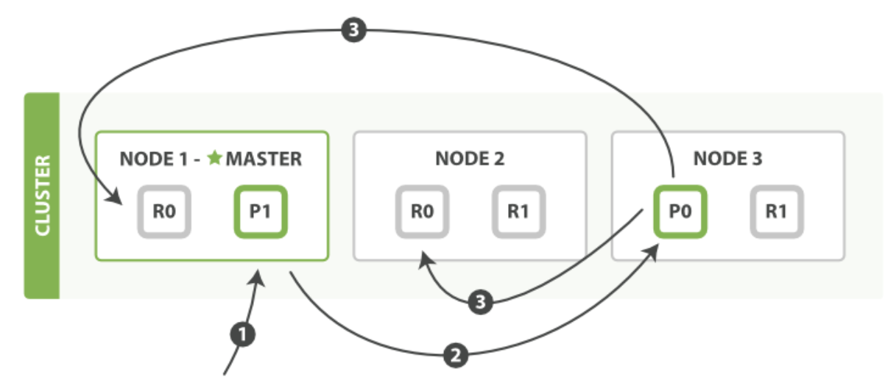

1. 新建、索引和删除文档
新建、索引和删除 请求都是 写 操作， 必须在主分片上面完成之后才能被复制到相关的副本分片， 如下图所示 Figure 9, “新建、索引和删除单个文档”.
Figure 9. 新建、索引和删除单个文档 
{kind=link}
以下是在主副分片和任何副本分片上面 成功新建，索引和删除文档所需要的步骤顺序：
客户端向 Node 1 发送新建、索引或者删除请求。
1 节点使用文档的 _id 确定文档属于分片 0 。请求会被转发到 Node 3，因为分片 0 的主分片
目前被分配在 Node 3 上。
2 Node 3 在主分片上面执行请求。如果成功了，它将请求并行转发到 Node 1 和 Node 2 的副本分片上。
3 一旦所有的副本分片都报告成功, Node 3 将向协调节点报告成功，协调节点向客户端报告成功。
在客户端收到成功响应时，文档变更已经在主分片和所有副本分片执行完成，变更是安全的。
有一些可选的请求参数允许您影响这个过程，可能以数据安全为代价提升性能。
这些选项很少使用，因为Elasticsearch已经很快，但是为了完整起见，在这里阐述如下：
consistency
consistency，即一致性。在默认设置下，即使仅仅是在试图执行一个写操作之前，主分片都会要求
必须要有 规定数量(quorum)（或者换种说法，也即必须要有大多数）的分片副本处于活跃可用状态，
才会去执行写操作(其中分片副本可以是主分片或者副本分片)。
这是为了避免在发生网络分区故障（network partition）的时候进行写操作，进而导致数据不一致。规定数量即：int( (primary + number_of_replicas) / 2 ) + 1
consistency 参数的值可以设为 one （只要主分片状态 ok 就允许执行写操作）,
all（必须要主分片和所有副本分片的状态没问题才允许执行写操作）,
或 quorum 。默认值为 quorum , 即大多数的分片副本状态没问题就允许执行写操作。
注意，规定数量 的计算公式中 number_of_replicas 指的是在索引设置中的设定副本分片数，
而不是指当前处理活动状态的副本分片数。如果你的索引设置中指定了当前索引拥有三个副本分片，那规定数量的计算结果即：int( (primary + 3 replicas) / 2 ) + 1 = 3
如果此时你只启动两个节点，那么处于活跃状态的分片副本数量就达不到规定数量，也因此您将无法索引和删除任何文档。
timeout
如果没有足够的副本分片会发生什么？ Elasticsearch会等待，希望更多的分片出现。
默认情况下，它最多等待1分钟。 如果你需要，你可以使用 timeout 参数 使它更早终止： 100 100毫秒，30s 是30秒。
NOTE
新索引默认有 1 个副本分片，这意味着为满足 规定数量 应该 需要两个活动的分片副本。 但是，这些默认的设置会阻止我们在单一节点上做任何事情。 为了避免这个问题，要求只有当 number_of_replicas 大于1的时候，规定数量才会执行。